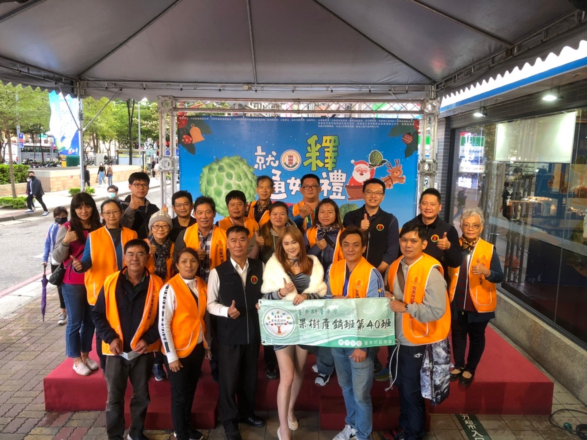
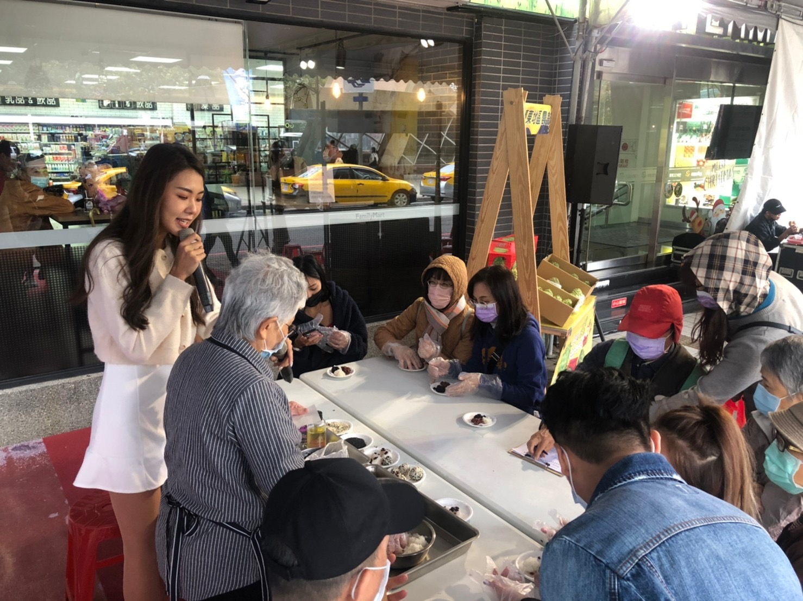

辦理展售活動（圖／農糧署）

辦理鳳梨釋迦品嚐會（圖／農糧署）
持續穩定除中國大陸以外的外銷市場，竭力維持產地收購價格，保障農民收人，將農民損失程度盡量降至最低，與貿易商努力開拓銷售新通路，太麻里區農會、十股合作社及陽光合作社合計出口226公噸。
台東地區農會於新北市板橋區農會辦理行銷展售活動1場次，推廣產地鳳梨釋迦，認識產銷履歷，成功開拓新客源，並加深消費者對於臺東番荔枝與安全管理、品質優良、具可溯源等良好形象連結。台東縣十股果菜運銷合作社，於都會區百貨公司辦理番荔枝加工品展售行銷活動2場，推廣冷凍釋迦全果及切丁、切塊試吃，加強行銷力道，合計行銷1,770公噸。
番荔枝策略聯盟各成員持續配合提供鳳梨釋迦鮮果材料，協助國內有需求之加工業者研發試驗，如果乾、脆片、冰品、果汁等新產品，增加鳳梨釋迦多樣化用途及銷售管道，計加工280公噸。
1.各成員積極協助擴大產銷履歷面積，並於產銷班班會及經營場所宣導各項產銷履歴補助輔導措施，鼓勵農民加入產銷履歴験證，111年12月份為止番荔枝通過產銷履歷驗證面橫達457公項，較110年度288公項增加268公項。
2.辦理鳳梨釋迦產業國內通路輔導活動1場次。
3.冷凍加工原料10公噸。
4.國內外通路輔導費用1次。
5.外銷供果園講習會1場次。